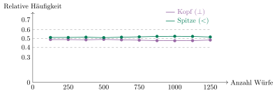

Aufgabe 4.1
Man verwende Excel, um die Entwicklung der relativen Häufigkeiten darzustellen und gebe einen Schätzwert für die Wahrscheinlichkeit der beiden Ergebnisse an.
- Erstellen Sie eine Excel-Tabelle mit den Versuchsergebnissen
- Berechnen Sie die relativen Häufigkeiten nach jeder Serie
- Erstellen Sie ein Diagramm, das die Entwicklung zeigt
- Beobachten Sie, ob sich die Werte stabilisieren
Berechnung der relativen Häufigkeiten:
Die relative Häufigkeit berechnet sich als: $$h_n(\text{Kopf}) = \frac{\text{Anzahl Kopf}}{\text{Gesamtanzahl Würfe}} \quad \text{und} \quad h_n(\text{Spitze}) = \frac{\text{Anzahl Spitze}}{\text{Gesamtanzahl Würfe}}$$
Entwicklung der relativen Häufigkeiten:

Nach insgesamt 1250 Würfen (50 Serien à 25 Würfe) ergeben sich:
- Kopf ($\perp$): $h_{1250}(\perp) = \frac{604}{1250} = 0.4832 \approx 48.3\%$
- Spitze ($<$): $h_{1250}(<) = \frac{646}{1250} = 0.5168 \approx 51.7\%$
Interpretation und Schätzwerte:
Die relativen Häufigkeiten stabilisieren sich nach etwa 500-750 Würfen bei:
- $P(\text{Kopf}) \approx 0.48$
- $P(\text{Spitze}) \approx 0.52$
Die leichte Asymmetrie (Spitze häufiger als Kopf) ist physikalisch plausibel, da der Schwerpunkt des Nagels nicht in der Mitte liegt. Das empirische Gesetz der grossen Zahlen zeigt sich darin, dass die anfänglichen Schwankungen mit zunehmender Versuchszahl abnehmen und sich die Werte um einen festen Wert einpendeln.
Im Video: Etappe 2 · Beispiele bei 2:43